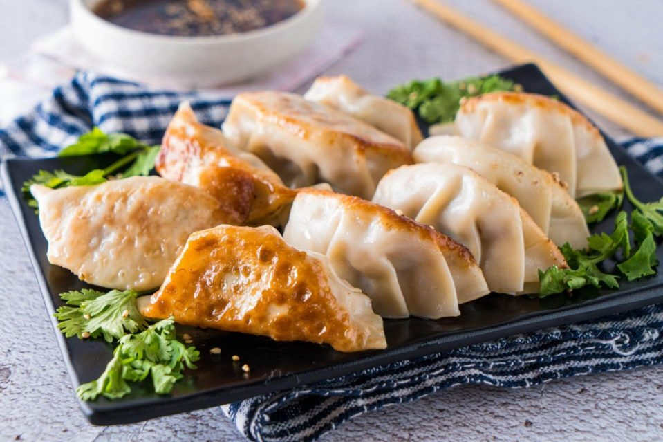

Cheesecake
originally found here

Description
Crispy pan fried dumplings with a savory filling accompanied with a delicious sauce
Servings: 8
Prep Time: 30 Minutes
Cook Time: 1 Hour 10 Minutes
Ingredients
For the filling
- 1/2 cup finely chopped bok choy leaves
- 1/2 cup finely chopped napa cabbage
- 1/4 cup finely chopped green onion
- 1/4 cup finely chopped water chestnuts
- 1 pound ground chicken
- 1 teaspoon light soy sauce
- 1 teaspoon dark soy sauce
- 1 teaspoon sesame oil
For the dumplings
- 1 (48-count) package dumpling wrappers, or gyoza wrappers
- 1 tablespoon cornstarch mixed with 2 tablespoons cold water
- 1 lightly beaten egg white, optional
- 1 tablespoon vegetable oil, or canola oil, more as needed
- 1/3 cup water, plus more if needed
- 2 ts fresh lemon juice, from 1 lemon
Steps
- Mix filling ingredients with your fingers in a large bowl
- Put filling in wrapper
- Fold wrapper prettily
- Cook dumplings in pan for 2 minutes
- add water let steam do the rest of work for 5 minutes
- Enjoy